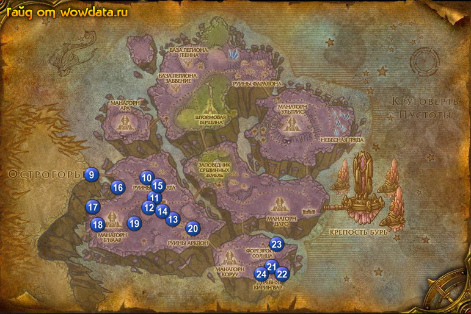

1) При входе в зону, на мосту 9 вы увидите Пустолог Медноклеппер, начните у него <В Зону 52>.
2) Идите дальше, вы увидите Роботех Элли 10 (31, 57), начните у нее <Перезарядка батарей>. Идите на север к обрыву, ищите Внепространственный охотник , бейте их, и примерно на оставшихся 25% жизни используйте на них [Перезаряжаемый самострел] и добивайте их для <Перезарядка батарей>.
3) Вернитесь к Роботех Элли и закончите квест.
4) Идите в Зона 52 11 (32, 62).
5) Когда подойдете к городу, с левой стороны откройте пункт перелетов 11 (34, 64).
6) В горде у гоблина за прилавком по имени Прибылец начните <Добыча глины кожеглина>.
7) Посередине города у Командующий ракетами Фьюзеляж закончите <В Зону 52>, начните <Тебя наняли!>.
8) Проигнорируйте 2 квеста на плакате розыка.
9) Идите в гостиницу и сделайте ее своим домом, у Экзарх Орелис начните <Отвлекающий маневр в Манагорне Б'наар>.
10) Выйдите из гостиницы и справа через мост вы увидите Равандвир, начните у него
<Посох верховного мага>.
11) Выйдите из города с северной стороны, и бейте там Глиношкурый камнедер для <Добыча глины кожеглина>.
12) Идите на север, к западу от руин вы увидите Маккс А. Миллион Mk. V, начните у него <Mk 5 жив!>, и сопроводите его через руины. Пока будете елать этот квест собирайте [Астралитиевый матричный кристалл] для <Тебя наняли!>. Затем, когда завершите сопровождение, закончите квест у Роботех Элли . Если вы не собрали все кристаллы, вернитесь в руины и соберите их.
13) Вернитесь в Зона 52, поговорите с Прибылец, закончите у него <Добыча глины кожеглина>, начните <Немного дополнительной силы>.
14) В центре города, около ракеты у Командующий ракетами Фьюзеляж закончите <Тебя наняли!>, начните <Захват бесценного оборудования> и <Рапорт главному инженеру>. Теперь бегите через мост к Главный инженер Треп и закончите его, и начните <Эссенция для двигателей>.
15) Идите снова на север и бейте Призрак магии для <Эссенция для двигателей>, так же бейте Скат Пустоты для <Немного дополнительной силы>.
16) Вернитесь в Зона 52, снова подойдите к Прибылец и закончите <Немного дополнительной силы>.
17) Идите к Главный инженер Треп 12 (32, 67) и закончите <Эссенция для двигателей>, начните <Извлечение силы Стихии>.
18) Идите на юго-запад от города к Манагорн Б'наар и бейте Магистр из клана Ярости Солнца и Кровостраж клана Ярости Солнца для <Отвлекающий маневр в Манагорне Б'наар>.
19) Идите на юг к абрыву и ищите Выщербленный грохотун и Астральная аберрация, используйте на них [Экстрактор силы Стихии]. Затем убивайте, и на месте их смерти будут появляться голубые кристаллы, используйте их для <Извлечение силы Стихии>.
20) Идите на северо-восток и войдите в Руины Арклон 13 (37, 71), тут делайте <Захват бесценного оборудования>, вокруг круга внутри руин .
21) Подойдите к центру к фонтану и используйте [Порошок Вызова] для суммона Эккораш Инквизитор для <Посох верховного мага>.
22) Идите обратно к Зона 52, не доходя до города под тентом 14 (34, 68) вы обнаружите Старший сапер Бджимбум, закончите у него <Захват бесценного оборудования>, начните <Доктор Бум!>.
23) Идите в город к Главный инженер Треп и закончите <Извлечение силы Стихии>, затем пройдите к Равандвир и закончите <Посох верховного мага>, начните <Восстановление посоха>.
24) Идите в гостиницу к Экзарх Орелис и закончите <Отвлекающий маневр в Манагорне Б'наар>, начните <Измерение энергии Искажения>, затем рядом с ним у Анахорет Каржа начните <Содействие Консорциуму> и <Технология наару>.
25) затем рядом с гостиницей у Ловчий Пустоты Кай'джи закончите <Содействие Консорциуму>, начните <Добыча артефакта для Консорциума>.
26) Идите на северо-восток от города в Лагерь Бума 15 (34, 60), теперь вам нужно убить Доктор Бум , но убить его можно только бомбами, их у вас всего 10 штук. тактика простая минуя аддов (чтоб они вас не задели) подбежать на расстояние нужное для броска бомбы, бросить бомбу и свалить пока не взорвали вас.
27) Идите на север в Руины Энкаата и бейте дренеев для <Восстановление посоха>.
28) Вернитесь в Зона 52, поговорите с Равандвир и закончите <Восстановление посоха>, начните <Проклятие Сиреневой башни>.
29) Выйдите из города и спуститесь к Старший сапер Бджимбум, закончите у него <Доктор Бум!>.
30) У вас должно быть примерно 75% на 68 лвл.
31) Идите на юго-запад к Манагорн Б'наар и используйте ваш [Сфера Гармонизации отклонений] рядом началом энергетических трубопроводов: 16 (26, 60), 17 (20, 67), 18 (21, 72) – когда вы будете тут войдите в здание 18 (22, 70) и вы увидите панель управления, закончите <Технология наару> и начните <Описание панели управления Б'наара>, затем идите к послденей трубе: 19 (29, 72) для <Измерение энергии Искажения>.
32) Идите на восток 20 (41, 73), через восточный вход проникните в Руины Арклон, когда войдете, справа вы обнаружите Пентатрон для <Добыча артефакта для Консорциума>.
33) Пеперйдите через мост на восток к Городская площадь 21 (58, 85) и поговорите с Таделл, начните у него <Колокольчик для коровы>, затем около него начните <Необходимые инструменты>.
34) У входа в башню начните <Зловещие останки>.
35) Наверху этой самой башни используйте [Посох верховного мага Варгота], появится Верховный маг Варгот. закончите у него <Проклятие Сиреневой башни> и начните <Печать Красуса>.
36) Когда спуститесь вниз поговорите с Лейтенант-колдун Морран и начните <Бесконечное вторжение>, и у Комендант Смертехрон начните <Участь хуже, чем смерть>.
37) Теперь бейте в округе Покалеченный дух для <Зловещие останки>.
38) К югу от башни вы можете найти Клятвопреступница Бельмара, из нее падает [Фолиант Белмары], который начинает <Клятвопреступница Бельмара>.
39) Внутри ратуши 22 (60, 87) вы найдете Боевой маг Датрик из которого падает [Клинок Датрика] – он начинает <Боевой маг Датрик>.
40) У кузницы (и в ней разумеется) бейте мобов 22 (60, 85) ради [Дробящий молот] для <Необходимые инструменты>.
41) Вы так же можете увидеть Кудесник Люминрат гуляющего сдесь, убейте его ради предмета, который начинает <Кудесник Люминрат>.
42) Найдите гнома Кольен Ледоплет , убейте его ради шляпы, которая начинает <Кольен Ледоплет>.
50) Идите в Церковный двор 23 (59, 78) найдите Бесси (это корова) и закончите у нее <Колокольчик для коровы>, начните <Когда коровы возвращаются домой>. Теперь идите и охраняйте эту скотину. Когда приведете на место, закончите квест у Таделл.
51) Рядом с ним закончите <Необходимые инструменты> и начните <Мастер-кузнец Ронсус>.
52) На западе (относительно карты) вы увидите несколько домов, бейте там мобов для <Участь хуже, чем смерть>. Далее войдите в дом 21 (56, 86), первый с лева, если ийти от башни, вы увидите Оружейная стойка, вам нужно использовать [Клинок Датрика] для <Боевой маг Датрик>.
53) Через дом вы убидите руины где стои шкаф 24 (56, 88), используйте [Мантия Люминрата] для <Кудесник Люминрат>.
54) Еще выше вы увидите 2 дома, в том что справа вы найдете сундук 24 (55, 88), используйте [Шляпа Колиена] для <Кольен Ледоплет>.
55) Около этого дома вы найдете Фрагмент мана-бомбы для <Бесконечное вторжение>.
56) В следующием доме вы обнаружите полку 24 (55, 87), используйте [Фолиант Белмары] для <Клятвопреступница Бельмара>.
57) Подойдите обратно к башне изакончите <Бесконечное вторжение>, начните <Потенциальный источник энергии>. У Комендант Смертехрон закончите <Участь хуже, чем смерть> и <Зловещие останки>, начните <Летописи Кирин'Вара>. Закончите оставшиеся 4 квеста.
58) Идите обратно в ратушу 22 (60, 87) и убейте Боевой маг Датрик, только на этот раз для <Летописи Кирин'Вара>, затем пройдите к кузнице и убейте Ронсус для <Мастер-кузнец Ронсус>.
59) Вернитесь к башне и закончите <Летописи Кирин'Вара>, начните <В поисках доказательств>, затем спуститесь вниз к Ученик Андретан и закончите у него <Мастер-кузнец Ронсус>.
60) Сейчас вы должны быть 68 лвл, или очень близко к нему.